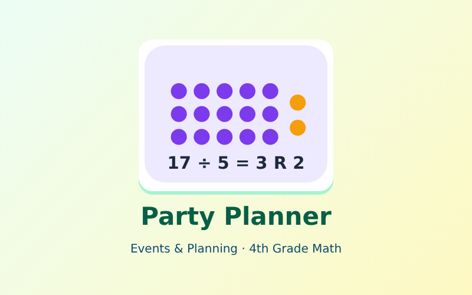

Plan a big party: divide guests, snacks and supplies, and decide what to do with what is left over.

Students plan a school celebration. They divide to seat guests, share snacks and pack party bags, then decide what each remainder means: ignore it, add one more group, or use it as the answer. They check every quotient with multiplication.